7.1 Derivação Numérica
Dado um conjunto de pontos (xi,yi)i=1n, a derivada  i pode ser calculada de várias
formas. Na próxima seção trabalharemos com diferenças finitas, que é mais adequada
quando as abcissas estão próximas e os dados não sofrem perturbações significativas.
Na seção subsequente trataremos os casos quando os dados oscilam via ajuste ou
interpolações de curvas.
i pode ser calculada de várias
formas. Na próxima seção trabalharemos com diferenças finitas, que é mais adequada
quando as abcissas estão próximas e os dados não sofrem perturbações significativas.
Na seção subsequente trataremos os casos quando os dados oscilam via ajuste ou
interpolações de curvas.
7.1.1 Aproximação da derivada por diferenças finitas
A derivada f′(x0) de uma função f(x) no ponto x0 é


Da definição, se h≠0 é pequeno (não muito pequeno para evitar o cancelamento
catastrófico), é esperado que uma aproximação para a derivada no ponto x0 seja dada
por:
 | (7.1) |
Exemplo 7.1.1. Calcule a derivada numérica da função f(x) = cos(x) no ponto
x = 1 usando h = 0,1, h = 0,01, h = 0,001 e h = 0,0001.
Solução. Usando a fórmula de diferenças dada pela Equação (7.1), devemos
calcular:
para cada valor de h solicitado, obtemos a Tabela ??.
No Scilab, podemos calcular a aproximação da derivada f′(1) com h = 0,1 usando
as seguintes linhas de código:


deff(’y = f(x)’,’y = cos(x)’)
x0 = 1
h = 0.1
dp = (f(x0+h) - f(x0))/h
E, similarmente, para outros valores de x0 e h. ♢
Observe que, no exemplo anterior, quanto menor h, melhor é a aproximação, visto
que o valor exato para a derivada é f′(1) = - sin(1) = -0,8414710. Porém, quando
h = 10-13, a derivada numérica é -0,8404388 (usando aritmética double), resultado
pior que aquele para h = 0,0001. Além disso, na mesma aritmética, quando h = 10-16 a
derivada numérica calculada é zero (cancelamento catastrófico). Isso nos motiva a
pensar qual é o melhor h.
Essa aproximação para a derivada é denominada diferenças progressivas. A derivada
numérica também pode ser aproximada usando definições equivalentes:
 que
é denominada diferenças regressivas ou
que
é denominada diferenças regressivas ou
 que
é denominada diferenças centrais.
que
é denominada diferenças centrais.


Exemplo 7.1.2. Calcule a derivada numérica da função f(x) = cos(x) no ponto
x = 1 usando diferenças progressivas, diferenças regressivas e diferenças centrais
com h = 0,1, h = 0,01 e h = 0,001.
Solução. A tabela abaixo mostra a derivada numérica para cada valor de
h.
|
|
| Diferenças | h=0,1 |
|
|
| Progressivas | -0,8670618 |
| Regressivas |  = -0,8130766 = -0,8130766 |
| Centrais |  = -0,8400692 = -0,8400692 |
|
|
| Diferenças | h=0,01 |
|
|
| Progressivas | -0,8441584 |
| Regressivas |  = -0,8387555 = -0,8387555 |
| Centrais |  = -0,8414570 = -0,8414570 |
|
|
| Diferenças | h=0,01 |
|
|
| Progressivas | -0,841741 |
| Regressivas |  = -0,8412007 = -0,8412007 |
| Centrais |  = -0,8414708 = -0,8414708 |
|
|
| |
♢


7.1.2 Erros de truncamento
Seja D+,hf(x0) a aproximação da derivada de f em x0 por diferenças progressivas,
D-,hf(x0) a aproximação por diferenças regressivas e D0,hf(x0) a aproximação por
diferenças centrais, então
Analogamente: Também:
Exemplo 7.1.3. Calcule a derivada numérica e o erro de truncamento de f(x) =
e-x em x = 1,5 pela fórmula de diferença progressiva para h = 0,1, h = 0,01 e
h = 0,001.
Solução. Como |f′′(x)| = |e-x| < 1, então |f′
+(x0) - f′(x0)| <  .
.


O valor exato da derivada é
f′(1,5) = -0,2231302.
♢
7.1.3 Erros de arredondamento
Para entender como os erros de arredondamento se propagam ao calcular as derivadas
numéricas vamos considerar o operador de diferenças finitas progressivas
 Nesse contexto temos o valor exato f′(x) para a derivada, a sua aproximação numérica
D+,hf(x) e a representação em número de máquina do operador D+,hf(x) que
denotaremos por D+,hf(x). Seja ε(x,h) o erro de arredondamento ao calcularmos a
derivada e consideremos
Nesse contexto temos o valor exato f′(x) para a derivada, a sua aproximação numérica
D+,hf(x) e a representação em número de máquina do operador D+,hf(x) que
denotaremos por D+,hf(x). Seja ε(x,h) o erro de arredondamento ao calcularmos a
derivada e consideremos
 Também, consideremos
Também, consideremos
 e
e
 onde f(x + h) e f(x) são as representação em ponto flutuante dos números f(x + h) e
f(x), respectivamente. A diferença do valor da derivada e sua aproximação
representada em ponto flutuante pode ser estimada da seguinte forma: onde
onde f(x + h) e f(x) são as representação em ponto flutuante dos números f(x + h) e
f(x), respectivamente. A diferença do valor da derivada e sua aproximação
representada em ponto flutuante pode ser estimada da seguinte forma: onde
 está
relacionado com o erro de truncamento.
está
relacionado com o erro de truncamento.
Esta estimativa mostra que se o valor de h for muito pequeno o erro ao calcular a
aproximação numérica cresce. Isso nos motiva a procurar o valor ótimo de h que
minimiza o erro.


Exemplo 7.1.4. Estude o comportamento da derivada de f(x) = e-x2 no ponto
x = 1,5 quando h fica pequeno.
Solução. Segue a tabela com os valores da derivada para vários valores de
h.
Observe que o valor exato é -0,3161977 e o h ótimo é algo entre 10-8 e
10-9. ♢
7.1.4 Aproximações de alta ordem
Para aproximar a derivada de uma função f(x) em x0, x1 ou x2 usaremos os três pontos
vizinhos (x0,f(x0)), (x1,f(x1)) e (x2,f(x2)). Uma interpolação usando polinômios de
Lagrange para esses três pontos é da forma:
A derivada de f(x) é
Trocando x por x0, temos
Considerando uma malha equiespaçada onde x1 = x0 + h e x2 = x0 + 2h,
temos:
Similarmente, trocando x por x1 ou trocando x por x2 na expressão (7.2), temos outras
duas expressões
Podemos reescrever as três fórmulas da seguinte forma: ou ainda Observe que uma das fórmulas é exatamente as diferenças centrais obtida
anteriormente.
Analogamente, para construir as fórmulas de cinco pontos tomamos o polinômio de
Lagrange para cinco pontos e chegamos a cinco fórmulas, sendo uma delas a
seguinte:
![1 h4
f′(x0) = ----[f(x0 - 2h) - 8f(x0 - h ) + 8f (x0 + h ) - f (x0 + 2h)]+-f (5)(ξ(x0))
12h 30](main1907x.png) | (7.6) |
Exemplo 7.1.5. Calcule a derivada numérica de f(x) = e-x2 em x = 1,5 pela
fórmula de três e cinco pontos para h = 0,1, h = 0,01 e h = 0,001.
Solução. A tabela mostra os resultados:
![|--------------------------|------------|---------------|-------------------|
|------------h-------------|--h-=-0,1---|---h-=-0,01----|----h-=-0,001------|
| | | | |
|-diferenças-progressivas---|--0,2809448--|---0,3125246---|-----0,3158289------|
| | | | |
|--diferen-ças regressivas--|--0,3545920--|---0,3199024---|-----0,3165667------|
|três pontos usando (7.3) |- 0,3127746 | - 0,3161657 | - 0,3161974 |
|--------------------------|------------|---------------|-------------------|
|três pontos usando (7.4) |- 0,3177684 | - 0,3162135 | - 0,3161978 |
|--------------------------|------------|---------------|-------------------|
|três pontos usando (7.5) |- 0,3135824 | - 0,3161665 | - 0,3161974 |
|--------------------------|------------|---------------|-------------------|
-cinco-pontos--usando-(7.6)----0,3162384-----0,316197677---- 0,3161976736860--|](main1910x.png)
O valor exato da derivada é
f′(1,5) = -0,3161976736856.
♢
7.1.5 Aproximação para a segunda derivada
Para aproximar a derivada segunda, considere as expansões em série de Taylor

 Somando as duas expressões, temos:
Somando as duas expressões, temos:
 ou seja, uma aproximação de segunda ordem para a derivada segunda em x0
é
ou seja, uma aproximação de segunda ordem para a derivada segunda em x0
é
 onde
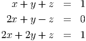
onde
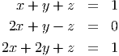
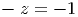
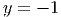
Exemplo 7.1.6. Calcule a derivada segunda numérica de f(x) = e-x2 em x = 1,5
para h = 0,1, h = 0,01 e h = 0,001.
Solução. A tabela mostra os resultados:
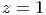 Observe que
f′′(x) = (4x2 - 2)e-x2 e
f′′(1,5) = 0,7377946.
♢
7.1.6 Derivada via ajuste ou interpolação
Dado os valores de uma função em pontos {(xi,yi)}i=1N, as derivadas 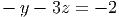i
podem ser obtidas através da derivada de uma curva que melhor ajusta ou
interpola os pontos. Esse tipo de técnica é necessário quando os pontos são
muito espaçados entre si ou quando a função oscila muito. Por exemplo, dado
os pontos (0,1), (1,2), (2,5), (3,9), a parábola que melhor ajusta os pontos
é
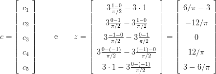
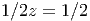
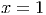
Usando esse ajuste para calcular as derivadas, temos:
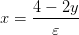 e
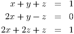
Agora olhe o gráfico da seguinte tabela de pontos.
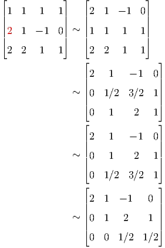
Observe que as derivadas calculadas por diferenças finitas oscilam entre um valor
 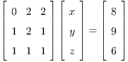
pequeno e um grande em cada intervalo e além disso, a fórmula progressiva
difere da regressiva significantemente. Por exemplo, por diferenças regressivas
f′(7) ≈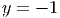 = 0,05 e por diferenças progressivas f′(7) ≈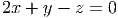 = 1,78. A
melhor forma de calcular a derivada aqui é fazer um ajuste de curva. A reta que melhor
ajusta os dados da tabela é y = f(x) = 1,2522727 + 0,9655455x. Usando esse ajuste,
temos f′(7) ≈ 0,9655455.
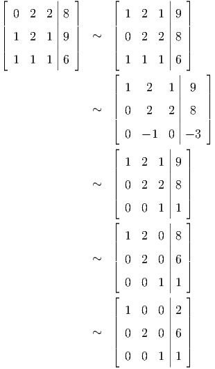
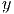
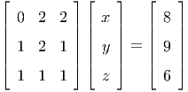
pequeno e um grande em cada intervalo e além disso, a fórmula progressiva
difere da regressiva significantemente. Por exemplo, por diferenças regressivas
f′(7) ≈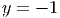 = 0,05 e por diferenças progressivas f′(7) ≈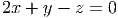 = 1,78. A
melhor forma de calcular a derivada aqui é fazer um ajuste de curva. A reta que melhor
ajusta os dados da tabela é y = f(x) = 1,2522727 + 0,9655455x. Usando esse ajuste,
temos f′(7) ≈ 0,9655455.
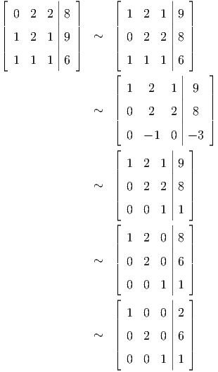
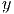


![| ---------| || f-(x +-h) - f(x)- ||
||f′(x) - D+,hf (x )|| = ||f ′(x) - ----------------(1 + ε(x,h))||
| ------h-- ----- |
|| ( f(x + h) - f(x ) f(x + h) - f(x + h)
= ||f ′(x) - ----------------+ --------------------
| ) h | h
f(x) - f(x) ||
+ ------------ (1 + ε)||
| h ( ---------
|| ′ f(x + h) - f(x) f (x + h) - f(x + h)
= ||f (x) + - -------h--------- ----------h---------
----- ) |
f(x) --f(x)- ||
+ h (1 + ε)||
| | (|--------- |
|| ′ f-(x +-h) --f(x)|| ||f(x-+-h)---f(x-+-h-)||
≤ ||f (x) - h || + || h ||
|----- |) | |
||f(x)---f(x-)|| ||f(x-+-h-) --f-(x-)||
+ || h || |1 + ε| + || h ||ε
( || || || ||)
≤ M h + ||δ||+ ||δ|| |1 + ε| + |f′(x)|ε
|h| |h |
( )
≤ M h + 2δ- |1 + ε| + |f′(x)|ε
h](main1883x.png)


![f′(x ) = f(x )----- 3h--- + f(x ) ---2h---
0 0 (- h)(- 2h) 1 (h )(- h )
′′′
+ f(x2)----h---+ f-(ξ(x0))-((- h)(- 2h))
(2h)(h) 6
1 [ 3 1 ] 2 f′′′(ξ(x0))
= -- - -f (x0) + 2f (x1) --f(x2 ) + h ----------
h 2 2 3](main1901x.png)
![[ ]
′ 1- 1- 1- 2 f′′′(ξ(x1))-
f (x1 ) = h - 2 f(x0) + 2f(x2 ) + h 6
1 [1 3 ] f′′′(ξ(x ))
f′(x2 ) = -- --f(x0) - 2f(x1) + --f(x2) + h2-------2--
h 2 2 3](main1902x.png)
![1 [ 3 1 ] f ′′′(ξ(x0))
f′(x0) = -- - -f(x0) + 2f(x0 + h ) ---f(x0 + 2h) + h2----------
h [ 2 ]2 ′′′ 3
f′(x + h) = 1- - 1f(x ) + 1-f(x + 2h) + h2f--(ξ(x0 +-h))
0 h 2 0 2 0 6
1 [1 3 ] f′′′(ξ(x0 + 2h ))
f′(x0 + 2h) = -- -f(x0 ) - 2f (x0 + h ) +-f(x0 + 2h ) + h2---------------
h 2 2 3](main1903x.png)
![′ 1-- 2f′′′(ξ(x0))-
f (x0) = 2h [- 3f (x0 ) + 4f (x0 + h ) - f (x0 + 2h)] + h 3 (7.3)
1 f′′′(ξ(x ))
f′(x0) = ---[f (x0 + h ) - f (x0 - h)] + h2-----0--- (7.4)
2h 6
′ 1-- 2f′′′(ξ(x0))
f (x0) = 2h [f (x0 - 2h ) - 4f(x0 - h) + 3f(x0)] + h 3 (7.5)](main1906x.png)